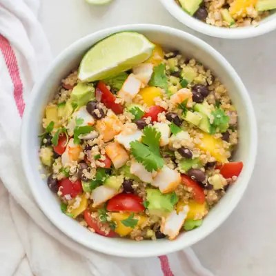

Mango Quinoa Salad with shrimp

Ingredients
- 1 cup (195g) quinoa, raw
- 1 ripe mango, diced
- 1 cup (130g) cucumber, diced
- ¾ cup (100g) cherry or grape tomatoes, quartered
- ½ cup (60g) red onion, finely chopped
- 15 oz can no-salt-added black beans, rinsed and drained
- ¾ cup chopped fresh cilantro
- 3 tablespoons freshly squeezed lime juice
- ½ tsp lime zest
- 2 Tbs extra virgin olive oil
- 1 tsp ground cumin
- 1/4-1/2 tsp smoked paprika
- 2 avocados, diced
- 1 pound shrimp, cooked
Steps
- Cook quinoa: rinse using a fine-mesh strainer. Bring quinoa and 2 cups of water to boil, reduce heat to low, cover, and cook for 15 minutes. Remove from heat and let it stand for 5 minutes, covered. Use fork to fluff. Refrigerate.
- In a small bowl, whisk together lime juice and zest, oil, cumin, and chili powder. Add to the large bowl and mix well. It is best served cold so plan on making several hours prior to eating.
- In a large bowl, add the quinoa and mangoes, vegetables, and beans. Gently toss with dressing.
- Refrigerate for at least several hours prior to serving. Overnight if able.
- Add avocado and cooked shrimp right before enjoying.
Recipe by Min Kwon · Kidfriendly Meals, from MJ and Hungryman. Saved here for personal use; the original has the full notes, tips and photos. Open original